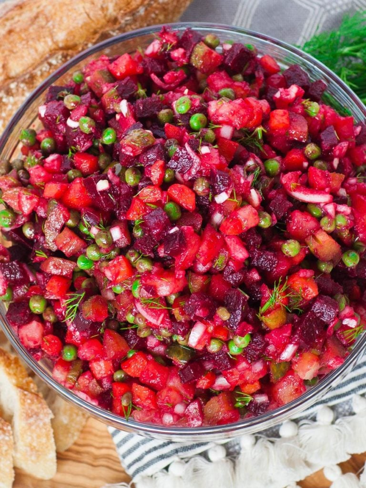

Ukrainian Vinaigrette

Ukrainian Vinaigrette Beet Potato Salad
If you love beets, you’re going to love this easy and delicious Ukrainian beet potato salad!
The popular “Vinaigrette” salad is a staple dish in the Eastern European cuisine. You can enjoy it as a side dish or by itself.
It’s a potato salad that’s loaded with delicious, sweet beets and dill!
Ingredients
- 1 pound of Potatoes
- 1 pound of Beets
- 1 pound of Carrots
- 1 Onion (minced)
- 1 (8 ounce) can of Peas, drained
- 2 large dill Pickles
- 2 tablespoon of Sunflower oil
- ½ teaspoon salt
- ½ teaspoon ground black pepper
- 1 tablespoon chopped fresh parsley (Optional)
Steps
- Place beets into a large pot and cover with water. Bring to a boil over high heat, then reduce the heat to medium-low,
cover, and simmer for about 20 minutes. Add carrots and potatoes; boil for 10 more minutes.
Remove from the heat and leave the pot covered, 8 hours to overnight
- Peel and dice beets, carrots, and potatoes into small, even pieces. Place vegetables into a large bowl.
- Stir in onion, peas, pickles, sunflower oil, salt, and pepper.
- Garnish with parsley before serving.